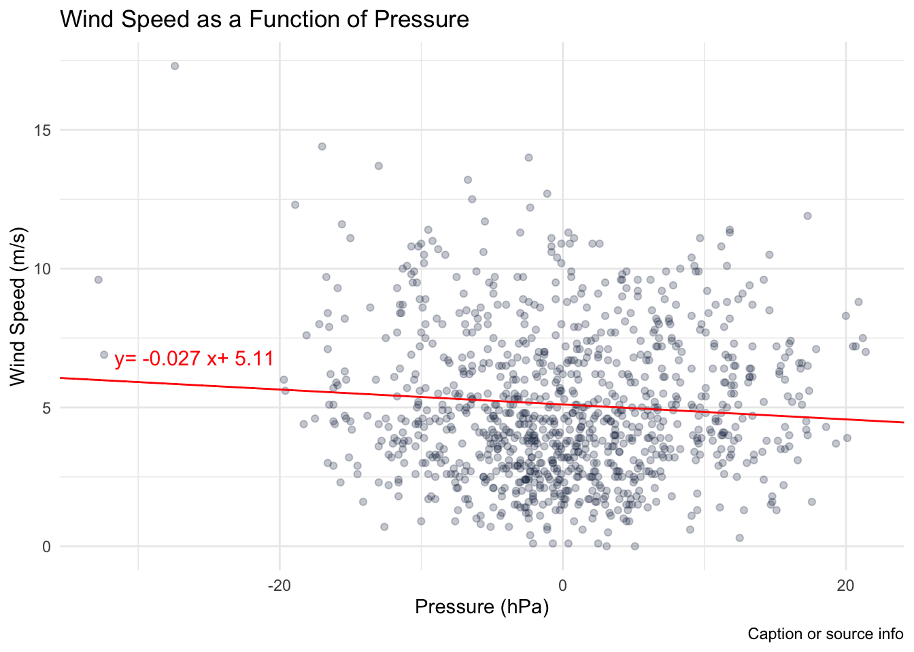
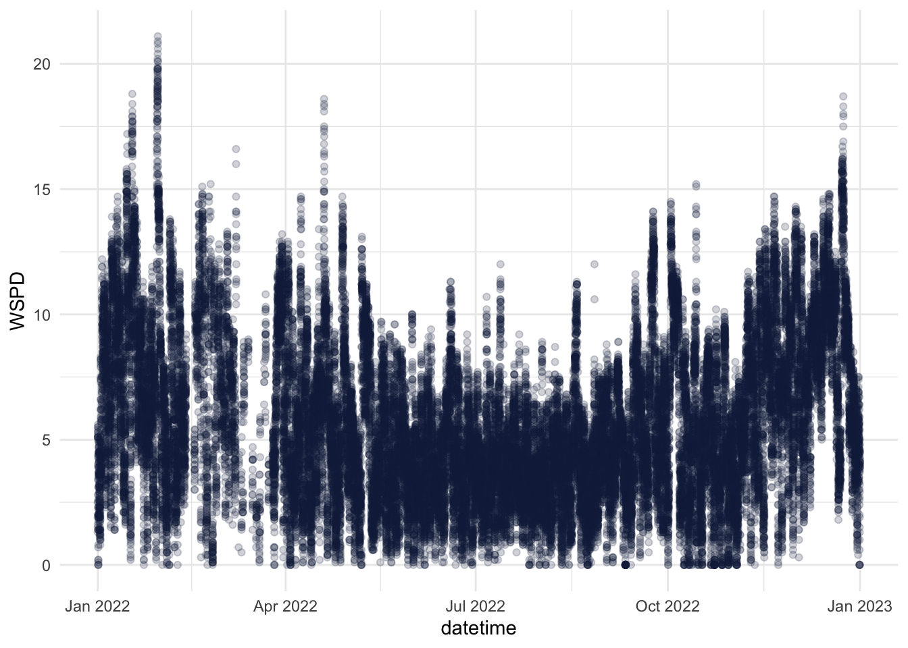
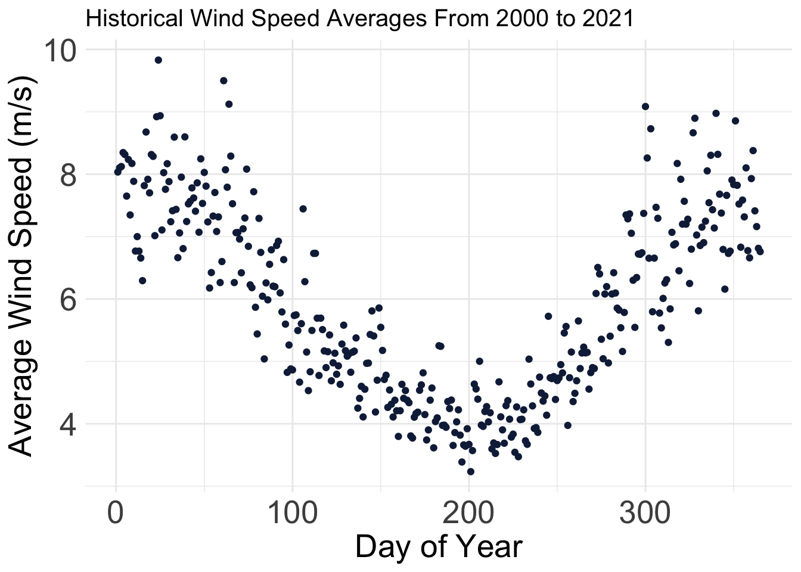

pacman::p_load(dplyr, ggplot2)data <-read.table('data/2023.txt')colnames(data) <-c('YY','MM','DD','hh', 'mm', 'WDIR', 'WSPD', 'GST', 'WVHT','DPD','APD', 'MWD', 'PRES','ATMP', 'WTMP', 'DEWP', 'VIS','TIDE')# This analysis will focus on wind speed and pressuredata <- data %>%filter(WSPD<99) %>%filter(PRES<9999)summary(data)
YY MM DD hh mm
Min. :2023 Min. : 1.000 Min. : 1.00 Min. : 0.00 Min. : 0
1st Qu.:2023 1st Qu.: 7.000 1st Qu.: 8.00 1st Qu.: 6.00 1st Qu.:10
Median :2023 Median : 9.000 Median :15.00 Median :12.00 Median :30
Mean :2023 Mean : 8.395 Mean :15.28 Mean :11.51 Mean :25
3rd Qu.:2023 3rd Qu.:11.000 3rd Qu.:23.00 3rd Qu.:18.00 3rd Qu.:40
Max. :2023 Max. :12.000 Max. :31.00 Max. :23.00 Max. :50
WDIR WSPD GST WVHT
Min. : 1.0 Min. : 0.00 Min. : 0.000 Min. : 0.16
1st Qu.:137.0 1st Qu.: 3.00 1st Qu.: 3.900 1st Qu.: 1.06
Median :211.0 Median : 4.60 Median : 5.800 Median :99.00
Mean :279.9 Mean : 5.11 Mean : 6.483 Mean :67.45
3rd Qu.:298.0 3rd Qu.: 6.90 3rd Qu.: 8.600 3rd Qu.:99.00
Max. :999.0 Max. :18.60 Max. :24.400 Max. :99.00
DPD APD MWD PRES
Min. : 2.15 Min. : 2.54 Min. : 0.0 Min. : 979.2
1st Qu.:10.81 1st Qu.: 5.53 1st Qu.:120.0 1st Qu.:1010.0
Median :99.00 Median :99.00 Median :999.0 Median :1014.7
Mean :69.99 Mean :68.67 Mean :717.3 Mean :1014.9
3rd Qu.:99.00 3rd Qu.:99.00 3rd Qu.:999.0 3rd Qu.:1020.4
Max. :99.00 Max. :99.00 Max. :999.0 Max. :1036.4
ATMP WTMP DEWP VIS TIDE
Min. : -4.3 Min. : 5.20 Min. :-12.9 Min. :99 Min. :99
1st Qu.: 11.2 1st Qu.: 11.30 1st Qu.: 7.7 1st Qu.:99 1st Qu.:99
Median : 17.2 Median : 16.00 Median : 14.5 Median :99 Median :99
Mean :123.0 Mean : 19.89 Mean :120.4 Mean :99 Mean :99
3rd Qu.: 20.3 3rd Qu.: 18.60 3rd Qu.: 19.2 3rd Qu.:99 3rd Qu.:99
Max. :999.0 Max. :999.00 Max. :999.0 Max. :99 Max. :99
Call:
lm(formula = wind ~ pressure, data = df)
Residuals:
Min 1Q Median 3Q Max
-5.3829 -2.0853 -0.5161 1.8088 12.7291
Coefficients:
Estimate Std. Error t value Pr(>|t|)
(Intercept) 5.110322 0.014757 346.31 <2e-16 ***
pressure -0.026966 0.001791 -15.06 <2e-16 ***
---
Signif. codes: 0 '***' 0.001 '**' 0.01 '*' 0.05 '.' 0.1 ' ' 1
Residual standard error: 2.746 on 34622 degrees of freedom
Multiple R-squared: 0.006507, Adjusted R-squared: 0.006478
F-statistic: 226.8 on 1 and 34622 DF, p-value: < 2.2e-16
b <-coef(model)[1] # Interceptm <-coef(model)[2] # Slopeb <-as.numeric(b)m <-as.numeric(m)eq =paste('y=',round(m,3),'x+',round(b,3))ggplot(random_subset) +aes(x = pressure, y = wind) +geom_point(colour =alpha("#112446", 0.25)) +theme_minimal() +geom_abline(intercept = b, slope = m, colour ="red") +annotate("text", x =-26, y = m*-25+b+1, label = eq, size =4, color='red') +labs(title ="Wind Speed as a Function of Pressure",caption ="Caption or source info",x ="Pressure (hPa)",y ="Wind Speed (m/s)")

Our model indicates a correlation of -0.027 when predicting wind speed from pressure. This means for every unit increase of pressure (hPa), the wind speed is expected to decrease by 0.027 m/s. Our model indicates wind speed to be a statistically significant predictor with a very low p-value of 2e-16, however the adjusted R^2 of 0.0065 indicates it is not a very useful predictor as only 0.65% of the variance in wind speed can be explained from pressure.
A Deeper Analysis in Predicting Wind Speed From Past Wind Speeds
To gain an intuition if this is possible, we first plot wind speed as a time series in the year 2022
data <-read.table('data/2022.txt')colnames(data) <-c('YY','MM','DD','hh', 'mm', 'WDIR', 'WSPD', 'GST', 'WVHT','DPD','APD', 'MWD', 'PRES','ATMP', 'WTMP', 'DEWP', 'VIS','TIDE')data <- data %>%filter(WSPD<99)data <- data %>%mutate(datetime =as.POSIXct(paste(YY, MM, DD, hh, mm), format ="%Y %m %d %H %M"))ggplot(data) +aes(x = datetime, y = WSPD) +geom_point(colour =alpha("#112446", 0.2)) +theme_minimal()

We see there may be an underlying cyclical nature of windspeed that we may be able to predict from previous years. We will simplify our problem to try and model the daily average wind speed data in 2022 as opposed to hourly values. To do this we will interface with a SQLite database.
averages <-dbGetQuery(con, "SELECT MM, DD, AVG(WSPD) as avg_wspd_histFROM buoy_dataWHERE WSPD < 99 AND NOT (MM = 2 AND DD = 29)AND YY < 2022GROUP BY MM, DDORDER BY MM, DD")daily_2022 <-dbGetQuery(con, " SELECT MM, DD, AVG(WSPD) as avg_wspd_2022 FROM buoy_data WHERE YY = 2022 AND WSPD < 99 AND NOT (MM = 2 AND DD = 29) GROUP BY MM, DD ORDER BY MM, DD")
Clean Data and Plot Historical Average and 2022 Average
pacman::p_load(lubridate)# daily_2022 is missing 7 valuesmissing_days <-anti_join(averages[,1:2], daily_2022[,1:2], by =c("MM", "DD"))# Fill in values with NA:missing_days <- missing_days %>%mutate(avg_wspd_2022 =NA)# Insert NA rows into 2022daily_2022 <-bind_rows(daily_2022, missing_days) %>%arrange(MM, DD)# Join datajoined_data <-left_join(daily_2022, averages, by =c("MM", "DD"))joined_data <- joined_data %>%mutate(date =make_date(year =2022, month = MM, day = DD),doy =yday(date),sin_doy =sin(2* pi * doy /365),cos_doy =cos(2* pi * doy /365) )ggplot(joined_data) +aes(x = doy, y = avg_wspd_hist) +geom_point(colour ="#112446") +labs(x ="Day of Year",y ="Average Wind Speed (m/s)",title ="Historical Wind Speed Averages From 2000 to 2021" ) +theme_minimal() +theme(plot.title =element_text(size =15L),axis.title.y =element_text(size =20L),axis.title.x =element_text(size =20L),axis.text.y =element_text(size =20L),axis.text.x =element_text(size =20L),legend.text =element_text(size =20L),legend.title =element_text(size =20L) )

We see there is a sinusoidal nature to the historical averages of wind speed. We can take this into consideration when developing a model.
Model comparing average past daily speed to 2022 daily averages
model <-lm(avg_wspd_2022 ~ avg_wspd_hist, data = joined_data)summary(model)
Call:
lm(formula = avg_wspd_2022 ~ avg_wspd_hist, data = joined_data)
Residuals:
Min 1Q Median 3Q Max
-5.6057 -1.4814 -0.3795 1.1310 6.9468
Coefficients:
Estimate Std. Error t value Pr(>|t|)
(Intercept) 0.89762 0.47038 1.908 0.0572 .
avg_wspd_hist 0.82150 0.07732 10.624 <2e-16 ***
---
Signif. codes: 0 '***' 0.001 '**' 0.01 '*' 0.05 '.' 0.1 ' ' 1
Residual standard error: 2.22 on 356 degrees of freedom
(7 observations deleted due to missingness)
Multiple R-squared: 0.2407, Adjusted R-squared: 0.2386
F-statistic: 112.9 on 1 and 356 DF, p-value: < 2.2e-16
This model alone is decently useful with an adjusted R^2 of 0.24 meaning 24% of the variance in 2022 daily wind speed can be explained by past averages. The p-value of 2e-16 indicates this is a statistically significant result and past averages can be a true predictor. However, we are still losing the sinusoidial seasonal data we initially saw when plotting past averages. We can take this into account in our next model.
Call:
lm(formula = avg_wspd_2022 ~ cos_doy, data = joined_data)
Residuals:
Min 1Q Median 3Q Max
-5.3417 -1.2726 -0.1560 0.9774 7.0393
Coefficients:
Estimate Std. Error t value Pr(>|t|)
(Intercept) 5.7546 0.1115 51.60 <2e-16 ***
cos_doy 2.0054 0.1570 12.78 <2e-16 ***
---
Signif. codes: 0 '***' 0.001 '**' 0.01 '*' 0.05 '.' 0.1 ' ' 1
Residual standard error: 2.11 on 356 degrees of freedom
(7 observations deleted due to missingness)
Multiple R-squared: 0.3144, Adjusted R-squared: 0.3124
F-statistic: 163.2 on 1 and 356 DF, p-value: < 2.2e-16
Thus, from just cos(date) alone we can explain 31.2% of the variance in the daily wind speeds, as opposed to 24% of the variance explained from historical averages.